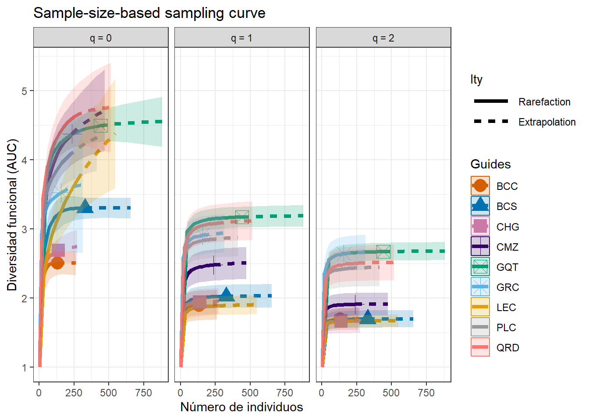
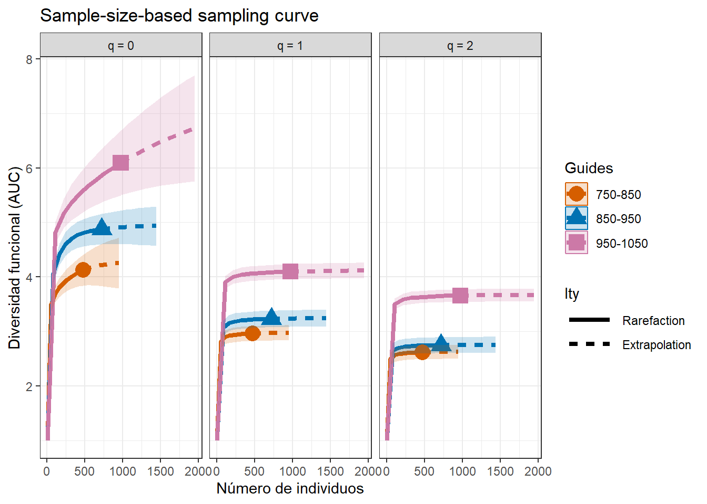
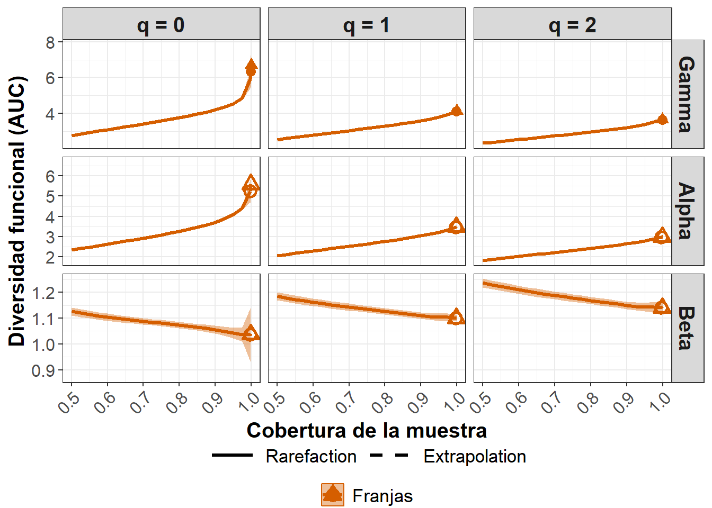
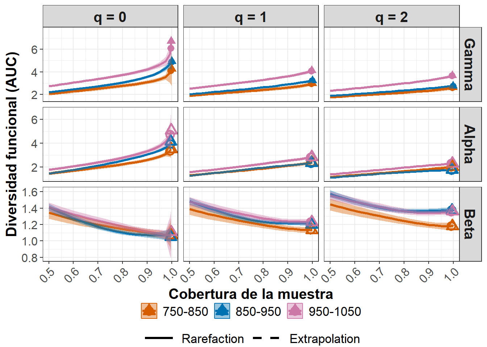

Fase 5
Diversidad funcional (FD), con Hill/iNEXT.3D funcional y partición γ-α-β (iNEXT.beta3D), sobre Sitio(Franja), acoplado a la Fase 4 (TD)
Nota sobre el análisis
Fase 5 hereda directamente de Fase 3 la matriz de distancia funcional de Gower (rasgos.d, 27 especies con ≥5 de 9 rasgos disponibles) y de Fase 4 el censo estructural depurado con el filtro estricto DAP ≥ 10.00 cm (confirmado 12-sep-2026). No se usa ninguna estructura precalculada de otras sesiones: todos los objetos se reconstruyen aquí desde los archivos fuente (Matriz_rasgos_PNNT.xlsx, Datos_estructura_PNNT.xlsx) para que el resultado sea 100 % trazable.
Propósito
Repetir sobre la matriz de distancia funcional de Gower (Fase 3) el mismo marco de números de Hill, rarefacción/extrapolación y partición γ-α-β (iNEXT.3D/iNEXT.beta3D, estandarizada por cobertura) que Fase 4 aplicó a la diversidad taxonómica, sobre la misma estructura Sitio anidado en Franja — para poder comparar directamente cómo responden TD y FD al gradiente hídrico/edáfico del PNNT (insumo para la Fase 7 de integración TD-FD).
Paquetes
iNEXT.3D e iNEXT.beta3D no están en CRAN — se instalaron desde los espejos de GitHub (AnneChao/iNEXT.3D, AnneChao/iNEXT.beta3D), igual que documenta la nota de paquetes de Fase 4 — Diversidad taxonómica TD PNNT.
Reconstrucción de rasgos1 (idéntico a Fase 3)
[1] 155.95Censo estructural — mismo filtro que Fase 4 (DAP ≥ 10.00 cm)
ImportantHallazgo de auditoría (Fase 5): no aplicar
distinct() de fila completa
Al reconstruir el censo desde cero se detectó que aplicar distinct() sobre todas las columnas (como hacía una versión anterior del script de transferencia del Taller 2) elimina 37 individuos por coincidencia exacta de DAP (cm)/Altura (m) — un artefacto esperable de la conversión CAP→DAP por clase diamétrica (varios árboles distintos de la misma especie, mismo Sitio/Subparcela, caen en la misma clase y heredan el mismo valor convertido), no un error de captura duplicado.
Aplicar ese distinct() haría caer el censo de 4070 a 4033 individuos, lo cual rompería la cifra ya fijada y publicada en Fase 4 (4070 individuos totales → 4054 tras el filtro DAP ≥ 10.00 cm, con la tabla por Sitio ya confirmada: BCC 481, BCS 540, CHG 438, CMZ 413, GQT 588, GRC 363, LEC 505, PLC 321, QRD 405).
Decisión: no se deduplica por fila completa. Se usa el censo crudo + el filtro estricto DAP ≥ 10.00 cm, para que Fase 5 (FD) quede calculada sobre exactamente los mismos individuos que Fase 4 (TD) y ambas dimensiones de diversidad sean directamente comparables.
[1] 4038[1] 71biol1 (Sitio × especie) y alineación con rasgos1
Umbral ≥5/9 rasgos → n = 27 especies (decisión ya fijada en Fase 3)
[1] 27 9BCC BCS CHG CMZ GQT GRC LEC PLC QRD
6 10 7 16 16 11 13 12 16 [1] "Las 27 especies retenidas cubren 2169 de 4038 individuos (53.7%)"Distancia de Gower (idéntica a Fase 3)
[1] 0Matrices especie × unidad para iNEXT (Sitio y Franja)
[1] 27 9[1] 27 3B1 — Diversidad funcional alfa con iNEXT3D (Sitio y Franja)
| Assemblage | n | S.obs | SC(n) | SC(2n) | dmin | dmean | dmax |
|---|---|---|---|---|---|---|---|
| BCC | 131 | 6 | 1.000 | 1.000 | 0.107 | 0.139 | 0.417 |
| BCS | 328 | 10 | 1.000 | 1.000 | 0.107 | 0.135 | 0.451 |
| CHG | 137 | 7 | 0.993 | 0.999 | 0.107 | 0.153 | 0.417 |
| CMZ | 236 | 16 | 0.987 | 0.994 | 0.053 | 0.170 | 0.451 |
| GQT | 441 | 16 | 0.998 | 1.000 | 0.053 | 0.225 | 0.526 |
| GRC | 157 | 11 | 0.987 | 0.998 | 0.053 | 0.224 | 0.417 |
| LEC | 274 | 13 | 0.982 | 0.988 | 0.095 | 0.129 | 0.571 |
| PLC | 207 | 12 | 0.986 | 0.993 | 0.107 | 0.229 | 0.451 |
| QRD | 258 | 16 | 0.992 | 0.999 | 0.095 | 0.199 | 0.503 |
| Assemblage | n | S.obs | SC(n) | SC(2n) | dmin | dmean | dmax |
|---|---|---|---|---|---|---|---|
| 750-850 | 475 | 13 | 0.996 | 0.999 | 0.107 | 0.207 | 0.451 |
| 850-950 | 721 | 19 | 0.999 | 1.000 | 0.053 | 0.198 | 0.451 |
| 950-1050 | 973 | 25 | 0.995 | 0.997 | 0.053 | 0.230 | 0.623 |
| Assemblage | qFD | FD_obs | FD_asy | s.e. | qFD.LCL | qFD.UCL |
|---|---|---|---|---|---|---|
| 750-850 | q = 0 FD(AUC) | 4.110 | 4.287 | 0.313 | 3.674 | 4.899 |
| 750-850 | q = 1 FD(AUC) | 2.960 | 2.982 | 0.073 | 2.839 | 3.125 |
| 750-850 | q = 2 FD(AUC) | 2.616 | 2.632 | 0.073 | 2.488 | 2.775 |
| 850-950 | q = 0 FD(AUC) | 4.874 | 4.944 | 0.369 | 4.222 | 5.666 |
| 850-950 | q = 1 FD(AUC) | 3.229 | 3.250 | 0.089 | 3.075 | 3.425 |
| 850-950 | q = 2 FD(AUC) | 2.749 | 2.761 | 0.082 | 2.601 | 2.921 |
| 950-1050 | q = 0 FD(AUC) | 6.082 | 7.852 | 0.908 | 6.072 | 9.632 |
| 950-1050 | q = 1 FD(AUC) | 4.097 | 4.133 | 0.070 | 3.996 | 4.271 |
| 950-1050 | q = 2 FD(AUC) | 3.657 | 3.677 | 0.065 | 3.550 | 3.805 |


B2 — Partición γ-α-β funcional con iNEXT.beta3D (estandarizada por cobertura)


Lectura conjunta — comparación directa TD (Fase 4) vs FD (Fase 5)
Los valores de β-FD de la tabla siguiente se extraen por código de los objetos fd_beta_franjas/fd_beta_sitio_franja calculados arriba (punto de anclaje Observed_SC(n, alpha), la cobertura muestral real de cada comparación) — no se transcriben a mano, para que la tabla no quede desactualizada si el documento se vuelve a renderizar con datos nuevos. Los valores de β-TD son los ya fijados y publicados en Fase 4 — Diversidad taxonómica TD PNNT (no se recalculan aquí; Fase 4 es un documento cerrado).
| Comparacion | Order.q | beta-TD [IC 95%] (Fase 4) | beta-FD [IC 95%] |
|---|---|---|---|
| Entre las 3 Franjas | 0 | 1.29 [1.14-1.43] | 1.04 [0.94-1.14] |
| Entre las 3 Franjas | 1 | 1.39 [1.37-1.41] | 1.10 [1.09-1.11] |
| Entre las 3 Franjas | 2 | 1.48 [1.44-1.51] | 1.14 [1.12-1.16] |
| Sitios en 750-850 | 2 | 1.79 [1.70-1.87] | 1.18 [1.14-1.23] |
| Sitios en 850-950 | 2 | 2.30 [2.18-2.41] | 1.38 [1.35-1.41] |
| Sitios en 950-1050 | 2 | 2.30 [2.21-2.40] | 1.36 [1.32-1.39] |
WarningAdvertencia sobre la estabilidad de la FD asintótica en q=0
fd_franja$FDAsyEst muestra que la riqueza funcional asintótica (q=0) de la Franja 950-1050 tiene un intervalo muy ancho y asimétrico (observada 6.08, asintótica 7.85, IC [6.07–9.63]), a diferencia de q=1 y q=2 (IC estrechos en las tres Franjas). Una cobertura muestral alta a nivel de individuos (0.995 aquí) no garantiza que el espacio de rasgos esté bien muestreado: q=0 es más sensible a combinaciones de rasgos raras/extremas. No se debe citar el valor asintótico de riqueza funcional (q=0) de 950-1050 como un número estable — los contrastes en q=1 y q=2 (y toda la partición β de arriba) sí lo son.
Hallazgo central de Fase 5: el recambio funcional es mucho menor que el recambio taxonómico en todos los niveles y órdenes q (β-FD cercano a 1 en casi todos los casos, frente a β-TD de 1.3–2.3) — evidencia clara de redundancia funcional: especies distintas entre Sitios/Franjas convergen en estrategias de economía foliar/madera similares. El patrón cualitativo de Fase 4 se repite en FD: la Franja seca (750-850) es la más homogénea internamente en la fracción dominante del ensamblaje (q=2), con intervalos de confianza que no se solapan con las otras dos Franjas — igual que en TD, pero ahora también visible con más claridad en q=1 (en TD ese contraste en q=1 era solo marginal).
Síntesis de Fase 5 y decisiones pendientes
Lo que queda sólido:
- Cobertura muestral funcional muy alta (0.987–1.00) en todos los Sitios y Franjas — las comparaciones no están sesgadas por esfuerzo de muestreo.
- Redundancia funcional clara y consistente: β-FD << β-TD en los tres órdenes q, en los dos niveles de anidamiento.
- El patrón de homogeneidad interna de la Franja seca (750-850), ya visto en TD, se replica en FD y con separación más nítida en q=1.
Advertencias activas heredadas de Fase 3 (no resueltas aquí):
- El análisis funcional cubre 27 de 71 especies (44 especies quedan fuera por tener <5 de 9 rasgos, la mayoría con 1-2 rasgos casi siempre imputados) — 53.7% de los individuos del censo con match a especie. Es el mismo subconjunto y la misma advertencia de cobertura pareada heterogénea de Gower documentada en Fase 3.
- Los índices dependen de una matriz de rasgos mayoritariamente imputada (TRY), no medida en campo.
- Matiz importante, no una contradicción: la razón de autovalores negativos del PCoA (0.222) que preocupaba en Fase 3 afecta a
dbFD()/FRic/FDiv (que sí necesitan una incrustación euclidiana del espacio de rasgos). El marco Hill-Chao deiNEXT.3Dusado aquí (FDtype=“AUC”) calcula la diversidad funcional integrando directamente sobre la matriz de distancias de Gower (sin pasar por PCoA), por lo que no hereda automáticamente ese problema — pero sigue dependiendo de la misma cobertura pareada heterogénea entre especies, así que la cautela de Fase 3 sobre la calidad derasgos.dsigue aplicando igual. - Riqueza funcional asintótica (q=0) de la Franja 950-1050 con IC muy ancho (ver advertencia arriba) — no reportar ese número puntual como sólido.
Para confirmar con el equipo antes de Fase 6:
- ¿Se reporta la redundancia funcional (β-FD ≈ 1) como hallazgo central de la comparación TD-FD, tal como se sugiere aquí?
- ¿Vale la pena una corrida de sensibilidad de FD con el umbral de 6 rasgos sólidos (sin CFMS/DE/Qwsat), en paralelo a la pendiente de Fase 3?
- No se ejecutó FD a nivel de Subparcela (225 unidades): con las 27 especies, la mediana de individuos por subparcela es 9 (min=1, solo 8.1% con ≤2 individuos) — es viable, pero no tiene un análogo directo en Fase 4 (que solo usó Subparcela para PERMANOVA/betadisper/manyGLM, no para el marco de Hill). Queda como posible análisis de robustez adicional, no ejecutado por defecto.
Salida para trazabilidad
Qué hereda la Fase 6
- El biplot RDA y BIOENV (Fase 6) pueden trabajar tanto con la comunidad completa (72 especies, Fase 4) como con community-weighted means calculados sobre las 27 especies de esta Fase 5 — a decidir con el equipo cuál usar como respuesta biológica principal.
- La lectura de redundancia funcional (β-FD ≈ 1) es un antecedente directo para la Fase 7 (integración TD-FD): sugiere que la relación FD~TD a lo largo del gradiente probablemente no sea 1:1, y que vale la pena explorar explícitamente la redundancia funcional por sitio como una de las vías de integración propuestas en el prompt maestro.
rasgos.d,biol_sitio_fdybiol_franja(n=27) quedan disponibles para cualquier análisis de sensibilidad adicional (6 rasgos sólidos, Subparcela) que el equipo decida priorizar antes de cerrar Fase 5 formalmente.